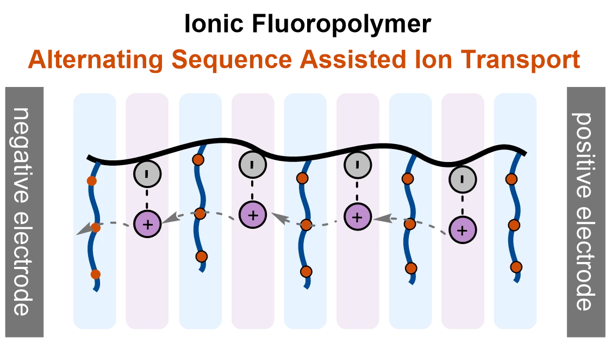
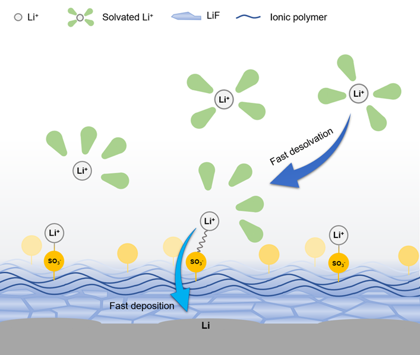
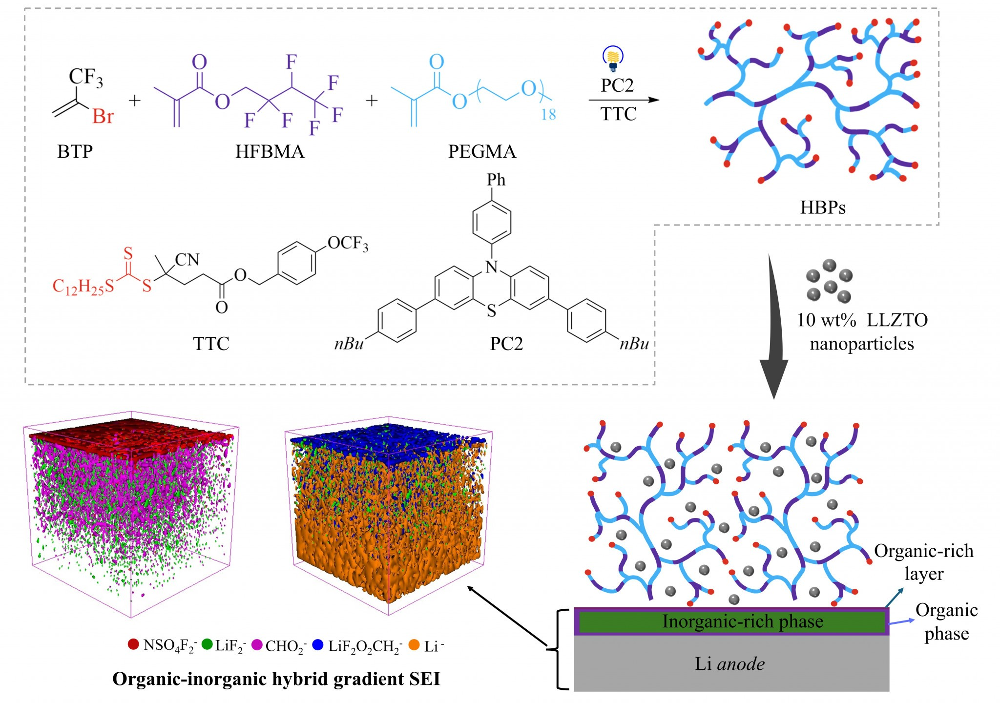
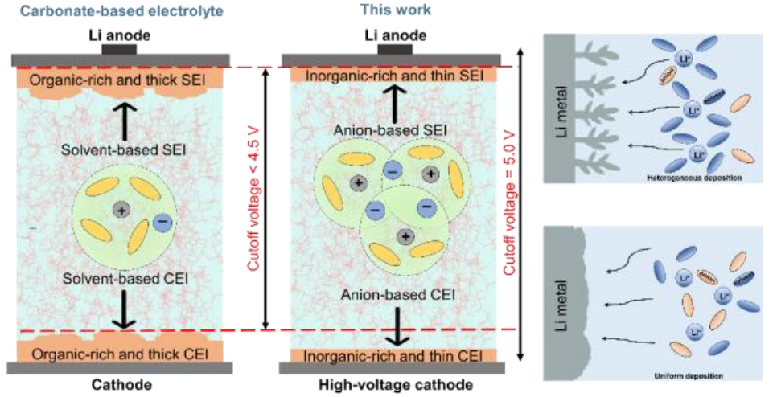
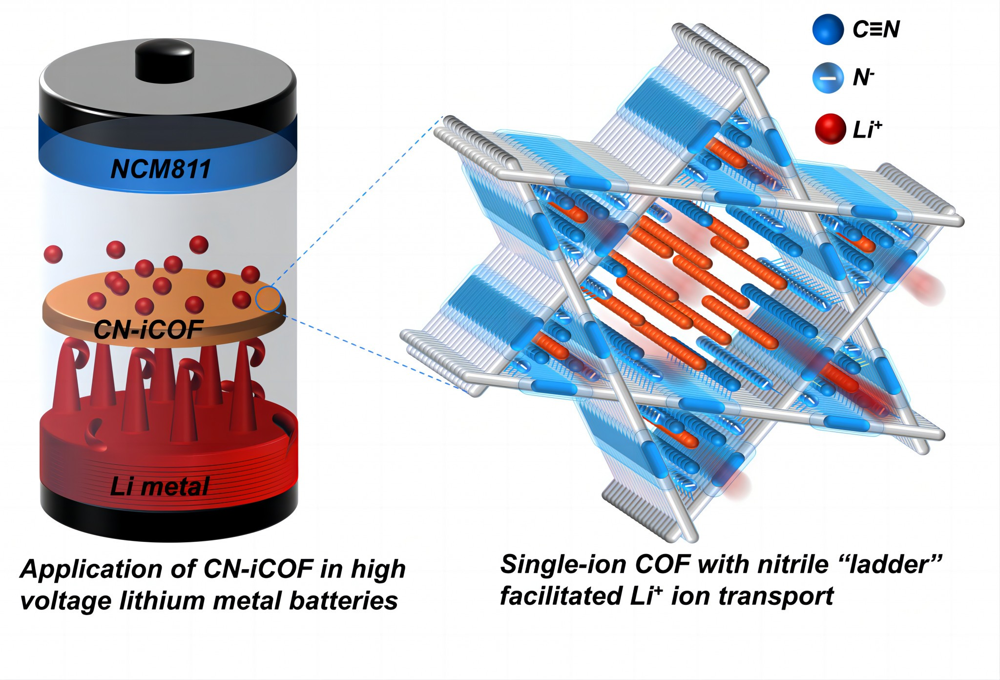
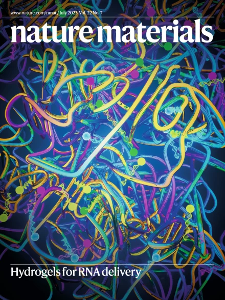

Gallery
Lab life and scientific visuals
The gallery brings together the human side of the group and the visual language through which we communicate molecular structures, ion transport, interfaces, and energy-storage concepts.
Lab Life
A growing group archive
Group meetings, conferences, graduations, celebrations, and daily laboratory life will be collected here. This first version establishes the editorial format; selected photographs can be added as the group archive is organized.
Scientific Visuals




